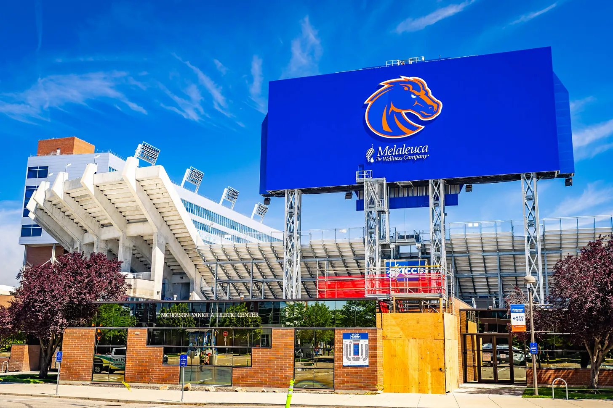
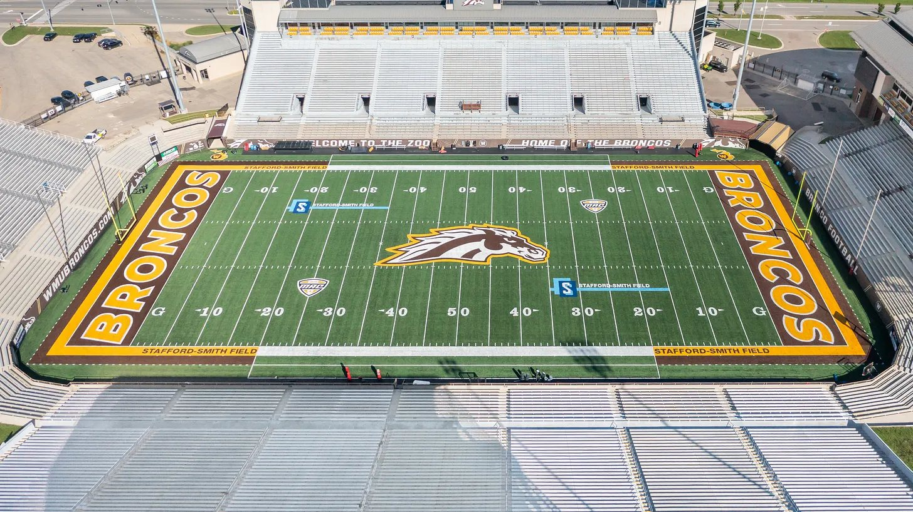

Elevation Change’s No. 2 Boise State (2-1) travels to Kalamazoo, Michigan to take on the “undefeated” Western Michigan Broncos (2-1) in a matchup that could become a major resume separator in the G6 CFP race.
Boise State and Western Michigan have followed remarkably similar early-season profiles through the first three weeks of the season. After falling at then-No. 2 Oregon in the opener, Boise State rebounded with wins over fellow G6 contender Memphis and then-FCS No. 10 South Dakota. Western Michigan has done the same, responding to a one-point loss at then-No. 16 Michigan with victories over FCS Monmouth and at Rice.
Boise State currently is among the favorites in the all-new Pac-12 while Western Michigan is tied for second in the MAC race. Both also have CFP aspirations with Boise State’s +230 odds the best among G6 teams, and Western Michigan at +2500. A win for either team would provide an important resume boost in the race for the G6’s automatic CFP berth.
Boise State’s greatest offensive strength directly attacks one of Western Michigan’s biggest weaknesses. Boise State running back Dylan Riley, who’s currently third in the FBS in rushing yards with 454, should have several opportunities to break through a porous Western Michigan run defense that ranks 96th nationally in rushing yards allowed per game.

On the defensive side, defensive back Travis Anderson has stormed onto the scene with three interceptions and 18 tackles through three games this year. After playing sparingly his first two seasons, he’s currently tied for second in the FBS in interceptions — an incredible leap after recording just six tackles in 14 games last year.
Anderson’s emergence sets up an intriguing matchup against Broc Lowry, Western Michigan’s quarterback who has yet to turn the football over this season while completing an impressive 70.5% of his passes. Western Michigan’s offense runs through Lowry and his ability to exploit a statistical mismatch of its own against a weak Boise State pass defense that allows 335 yards per game.
Lowry’s No. 1 target, sophomore wide receiver Aveion Chenault, could see a big game against Boise State’s secondary. Averaging over 16 yards per reception through three games, Chenault’s ability to stretch the field presents a significant challenge for the Broncos in blue.

Saturday comes down to which statistical mismatch proves more significant: Boise State’s rushing advantage or Western Michigan’s opportunity through the air.
Boise State currently stands at No. 2 in the Elevation Change rankings coming into this weekend’s game. A win in Kalamazoo could push them closer to No. 1 NDSU, who’s on bye this week. In its last week before beginning conference play, Boise State has a great chance to add another signature win to its already impressive resume.
At the time of publishing, Boise State comes in as a seven-point favorite on a total of 49.5 according to DraftKings. We’re going to give the edge in the first-ever ‘Bronco Bowl’ to the Broncos out west, with Boise State also covering the spread largely because of the sheer power of Riley’s rushing attack.
Prediction
- Boise State
- 31
- Western Michigan
- 21